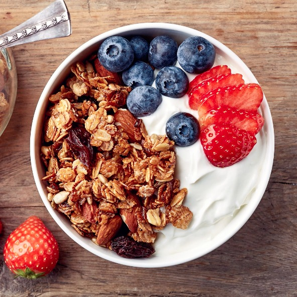

Papo de Panela
Papo de Panela
Iogurte Natural com Frutas e Granola
Ingredientes
- 1 pote de iogurte natural (170 g)
- Frutas picadas (banana, morango, mamão, uva, etc.)
- 2–3 colheres (sopa) de granola
- Mel a gosto (opcional)
Modo de preparo
- Coloque o iogurte em um bowl ou taça.
- Adicione as frutas picadas por cima.
- Finalize com granola e um fio de mel, se desejar.